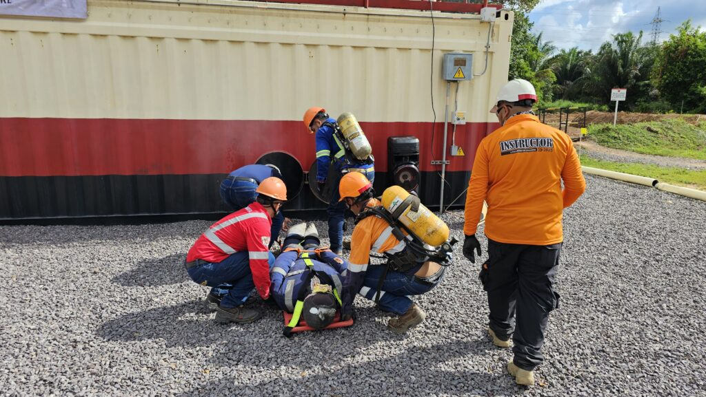
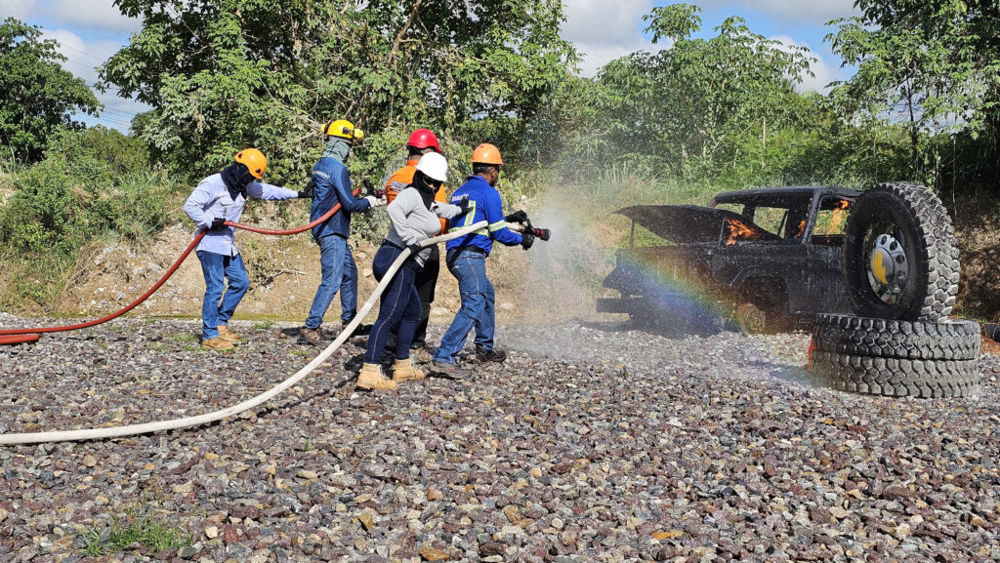

Servicios
¿Cómo crear una brigada? Acá te contamos
- Identificación de riesgos: realiza una evaluación de riesgos en tu empresa para determinar las posibles emergencias que podrían ocurrir.
- Selección del personal: elige empleados voluntarios y comprometidos para formar parte de la brigada. Es importante que estos trabajadores tengan disponibilidad y disposición para recibir la capacitación necesaria.
- Capacitación: proporciona formación en primeros auxilios, evacuación, uso de extintores y otros procedimientos de emergencia. Puedes contar con la asesoría de especialistas en seguridad laboral.
- Equipamiento: asegúrate de que la brigada tenga acceso a equipos de emergencia, como botiquines, extintores y sistemas de comunicación.
- Simulacros: realiza simulacros periódicos para mantener a la brigada preparada y evaluar la efectividad de los procedimientos.
Para que este proceso tenga resultados sostenibles, la conformación de la brigada debe apoyarse en criterios técnicos, incluyendo perfil físico y emocional de los brigadistas, distribución por áreas, cobertura por turnos y conocimiento de los riesgos específicos de la operación. También es importante documentar roles, responsabilidades y frecuencia de entrenamiento, porque esto facilita el seguimiento del desempeño y el cumplimiento de estándares internos.


¿Listos para conformar tu brigada?
Te acompañamos desde el diagnóstico hasta los simulacros.